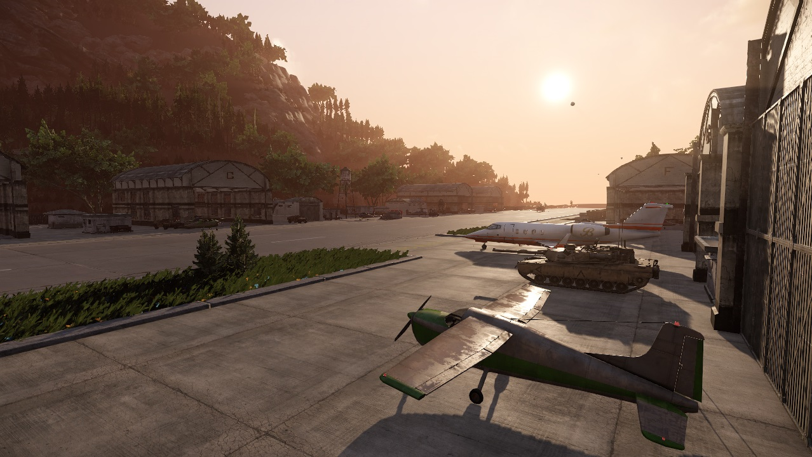
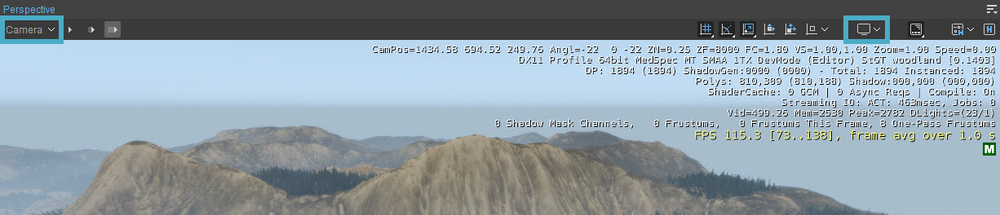
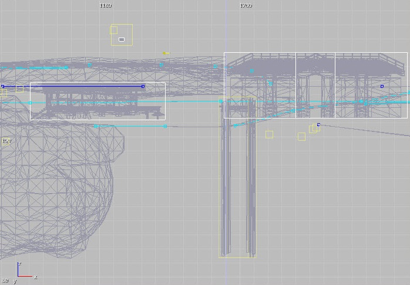
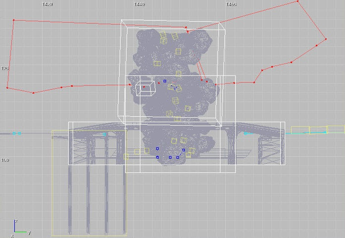
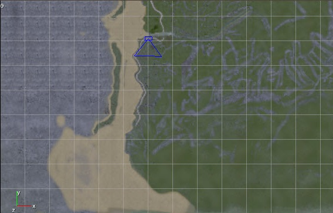
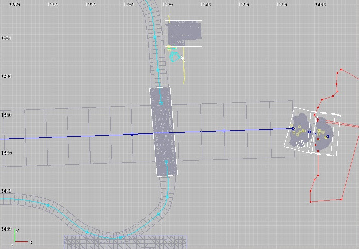
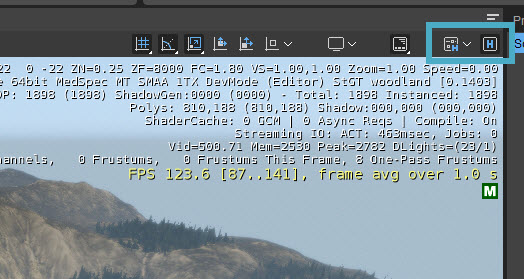
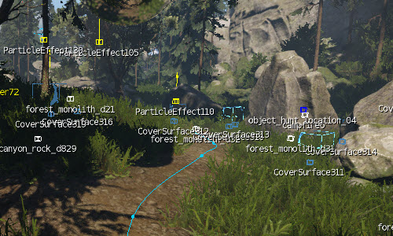

Overview
The Viewport window displays the scene which is rendered by the Engine, but Viewports are more than passive observation points. This is where a large majority of the level design tasks take place, such as object placement, terrain editing, and in-editor play testing. They are also dynamic and flexible tools for a user to understand the 3D relationships among objects in a level.
The majority of your work will be done within the Perspective Viewport, but we also provide a suite of 2D wireframe views - Front, Left side, Top, and another top-down view called Map that shows helper, terrain, and texture information. These 2D views can be helpful when you need to check the relative position of elements in your scene on a specific X, Y, or Z axis.
These Viewports can also opened by going to Tools → Viewport.
You can even have more than one of the same Viewport open at the same time.
On the subpages of this page you'll also find the reference information for the Camera and Display settings. These are not located in the Tools menu, but as they are part of the Viewport window (top-left and top-right corners), they have been included here.
Viewports
In CRYENGINE, you can open five Viewports simultaneously.
Perspective Viewport
This Viewport shows a view of your level using the default camera perspective, displaying all level content:

The Perspective Viewport has Camera settings and Display settings that are specific to that Viewport. These settings can be accessed by clicking on the Camera button in the top-left corner of every Viewport and the Display button in the top-right corner of every Viewport:

You can find an overview of the options in the Camera and Display menus on the following pages:
Context Menu
When right-clicking on objects, entities etc. in the Perspective Viewport, a context menu appears. This menu can have many different options, depending on what you clicked on.
Front Viewport
This Viewport shows a front view of your level, consisting of bounding boxes and line-based helpers. Terrain Geometry will not be shown.

Left Viewport
Shows a view of your level from the left side, consisting of bounding boxes and line-based helpers. Terrain Geometry will not be shown.

Map Viewport
Shows an overhead map of the level with helper, terrain, and texture information.

Top Viewport
Shows a top-down view of your level, consisting of bounding boxes and line based helpers. Terrain Geometry will not be shown.

Menu
The Menu can be accessed via the 
For more information about the Viewport Menu options, please refer to the Menu Bar documentation.
Snapping Buttons
The options behind the Snapping buttons are already explained on different pages, so they won't be discussed here. Click the following link for more information: Snap & Alignment.
Helpers
Helpers display extra info about objects in the Viewport. This can range from physics proxies to links with other objects to the names of the objects instead of icons.
There are two buttons in the top-right corner of the Viewport that are related to helpers; the first lets you choose which helpers you want to see, and the second toggles those chosen helpers on and off:

You can also toggle helpers with Ctrl+H.
The helpers are quite self-explanatory, so we won't go through the entire list. It is however useful to know that the helpers with a * are global helpers, meaning that if you activate them, they are displayed in all Perspective Viewports that you have created; normally the selected helpers are only displayed in the Viewport that you activate them in.
When you turn on a global helper, only the active Viewport will update, meaning that if you want them to display in any other Viewports, you will have to click in those Viewports first to activate them and display the helpers in question.
Selection Display Helpers
Holding the Space Bar will show helper labels to easily select objects:

This will also work when helpers are not active.
Maximizing the Viewport
Any active Viewport can be toggled between its current size and fullscreen view by pressing F11 on your keyboard or going to Display → Toggle Fullscreen.